Todo lo que se pidió en las últimas revisiones, ya funcionando, explicado área por área con las pantallas reales. Al final, las preguntas que quedan abiertas.
Producción · Calendario por máquina y turno
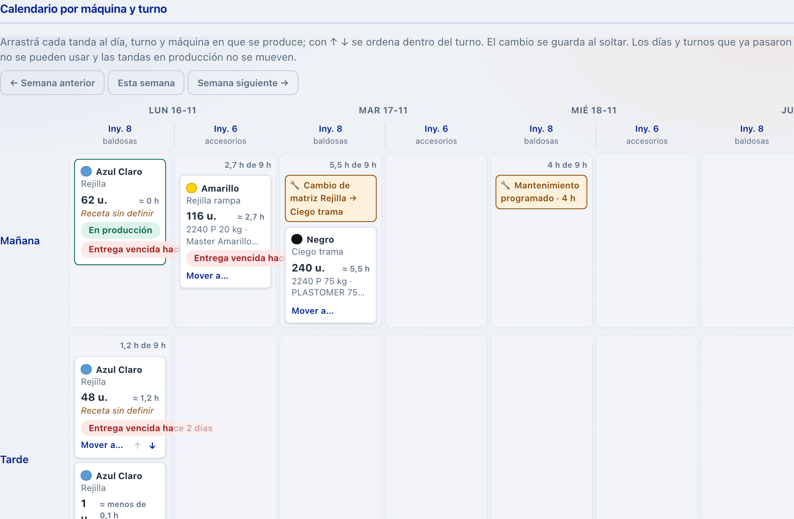
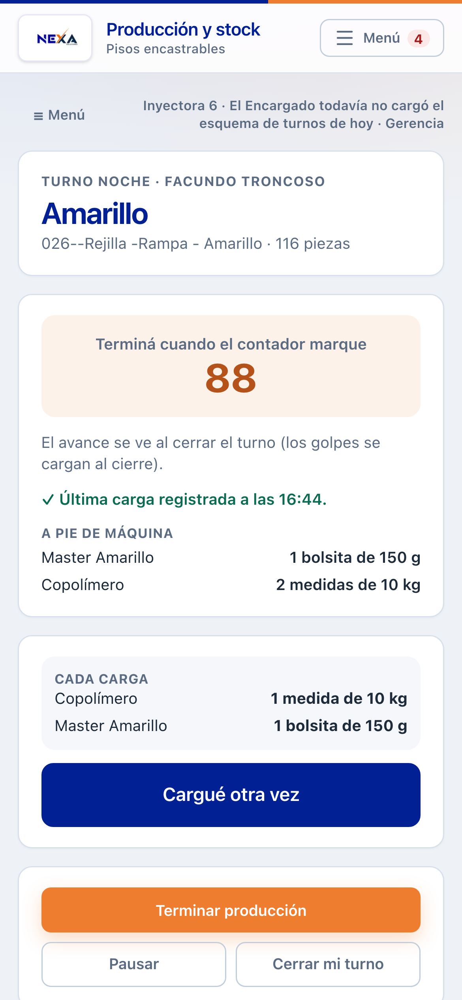
6áreas del sistema
17pantallas reales
15preguntas abiertas
NEXA Soluciones · Pisos encastrablesDocumento para revisión con la empresa
NEXA · Cambios en el sistema
Contenido
Qué hay en este documento
Seis áreas con lo que ya funciona, las preguntas que faltan responder y lo que sigue. Las capturas son de una copia de prueba con datos reales: algunos números pueden no coincidir con los de hoy.
Cada tanda muestra su duración y el sistema no deja cargar más de lo que entra en un turno. El calendario por máquina quedó debajo de la planificación, con cambios de matriz y mantenimientos.
La planta, un paso por vez
El operario arranca la tanda de su máquina, recibe el material sólo por un retiro y ve una sola acción principal. Registra la limpieza del inyector al cambiar de color.
Stock que sale del cierre
Las cajas entran a stock al cerrar cada turno, con su etiqueta y código de barras corto. El Encargado revisa cada turno con «Revisado / OK».
Pedidos y compras más flexibles
Pedidos en baldosas o en m², modificables hasta el despacho con aviso. Materia prima pide a Compras con un botón y cuenta el stock cada semana.
2
NEXA · Cambios en el sistema
01 · Planificación y producción
01
Planificación y producción
El Encargado arma la semana sabiendo cuánto dura cada tanda y qué entra en cada turno. Lo que antes se calculaba a ojo ahora lo calcula el sistema con los tiempos del Excel «master y tiempos».
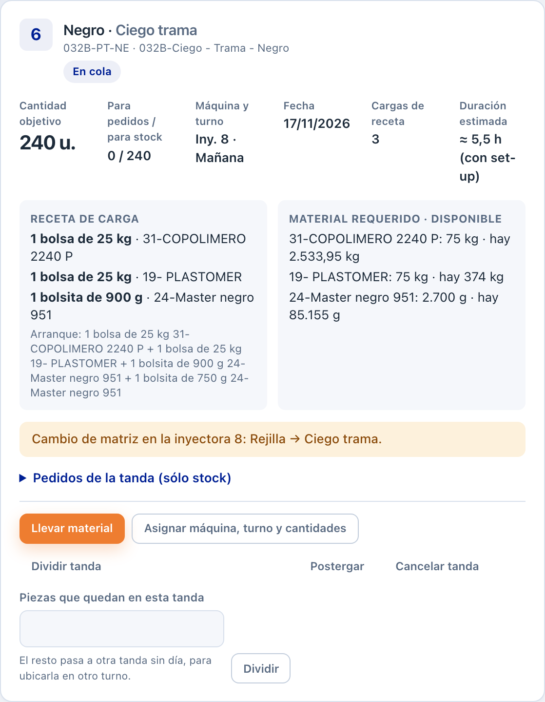
1234
Una tanda de ciego trama en la secuencia, con «Dividir tanda» abierto.
Cada tanda, con su duración
1
Duración estimadaPiezas por hora del producto, más el set-up cuando cambia la matriz o el color (se toma el tiempo más alto del rango).
2
Receta del ExcelCargada para cada tipo de producto. Ciego moneda y trama usan la del piso ciego; el negro lleva refuerzo de master en el arranque.
3
Aviso de cambioSi la tanda cambia de color o de matriz respecto de la anterior en la máquina, la tarjeta lo dice.
4
Dividir tandaUna tanda que no entra en el turno (9 horas) no se puede asignar. Se indica cuántas piezas quedan y el resto pasa a otra tanda.
No se puede planificar en días ni turnos que ya pasaron. «Llevar material» hace el retiro a pie de máquina antes de arrancar: ese material pasa a la producción cuando el operario arranca.
Tiempos que usa el sistema del Excel
40/h
Piso rejilla
set-up 2:30 h
100/h
Rampa rejilla
set-up 1:30 h
664/h
Esquinero rejilla
set-up 1:30 h
80/h
Piso ciego (trama y moneda)
set-up 2:30 h
86/h
Rampa ciego
set-up 2 h
440/h
Esquinero ciego
set-up 2 h
3
NEXA · Cambios en el sistema
01 · Planificación y producción
Calendario por máquina, debajo de la planificación
Está en la misma pantalla en la que se asigna: no hace falta cambiar de pestaña para ver cómo queda la semana.
Producción → Planificación → Calendario por máquina y turno
1234
1
Una columna por máquinaCada día tiene la inyectora 8 (baldosas) y la 6 (accesorios). Las baldosas no se pueden soltar en la 6 ni los accesorios en la 8.
2
Cuánto está ocupado el turno«5,5 h de 9 h»: arriba de cada turno se ve lo asignado contra lo disponible.
3
Cambio de matrizLo programa solo el sistema al asignar un ciego después de una rejilla en la misma máquina.
4
Mantenimiento programadoLos trabajos de Mantenimiento y Matrices aparecen con su duración estimada.
Arrastrar y ordenar
Las tandas se arrastran al día, turno y máquina en que se producen. Con las flechas ↑ ↓ se ordena dentro del turno, y ese es el orden real de producción.
Si algo se mueve
Cuando una tanda se mueve o se cancela, el cambio de matriz que generó se mueve o se cancela con ella, y Matrices recibe el aviso.
4
NEXA · Cambios en el sistema
01 · Planificación y producción
Cambio de matriz automático
Planificación
El Encargado asigna un ciego después de una rejilla en la inyectora 8.
→
Sistema
Programa el cambio de matriz Rejilla → Ciego trama para ese día y turno.
→
Aviso
Matrices recibe el aviso en su pantalla de Avisos.
→
Calendario
El cambio aparece en el calendario, junto a la tanda.
Mantenimiento y Matrices
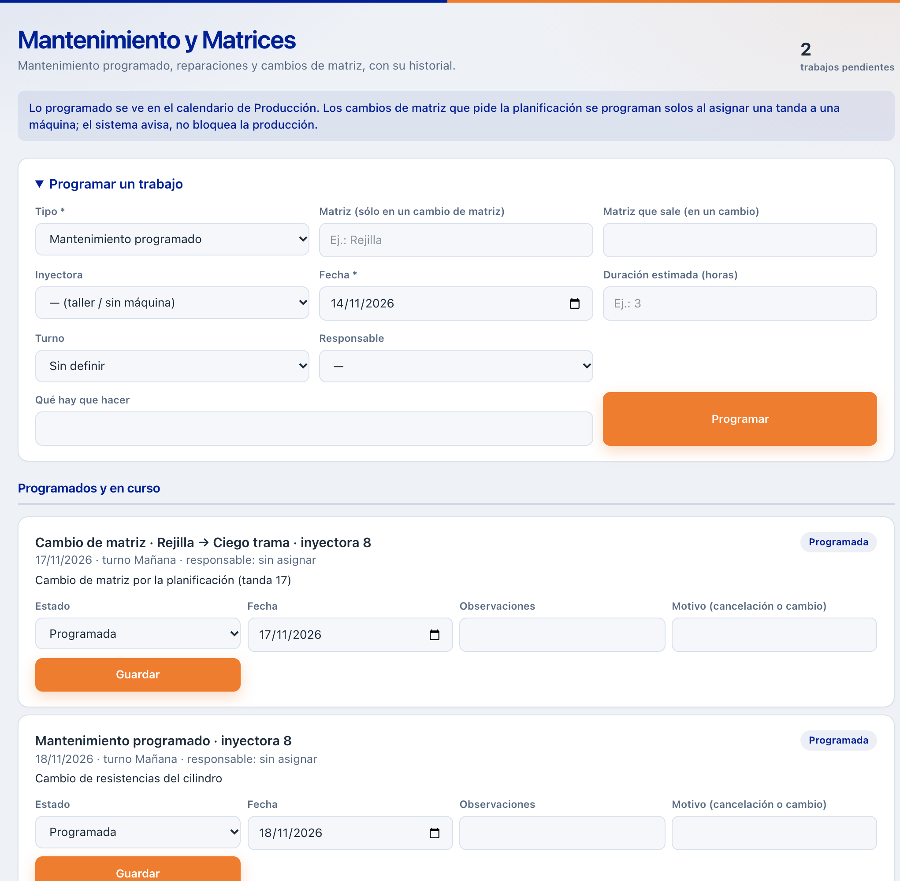
El formulario para programar un trabajo y los trabajos programados: el cambio de matriz lo generó la planificación.
Mantenimiento y Matrices
La sección cambió de nombre y programa tres tipos de trabajo: mantenimiento programado, reparación y cambio de matriz.
La matriz se pide sólo en un cambio de matriz: un mantenimiento de la máquina no obliga a elegirla.
Cada trabajo lleva una duración estimada que se ve en el calendario de turnos.
El usuario Taller quedó con el perfil de Matrices: hace mantenimiento y cambios de matriz, pero no produce con las inyectoras.
5
NEXA · Cambios en el sistema
01 · Planificación y producción
Uno asigna, otro arranca
Encargado / Supervisor
Arma las tandas: cantidad, máquina, día y turno.
Lleva y repone material a pie de máquina.
Si el operario no tiene el celular, arranca en su nombre desde «Ver como el operario», con motivo.
Cancela una producción en curso.
Operario
Arranca la primera tanda de la cola de su máquina. Otra, sólo con motivo (queda en Relevos y novedades).
Confirma los golpes de inicio, que vienen precargados con el cierre anterior.
Carga la tolva, pausa, cierra su turno y termina la producción.
Revisión del Encargado nuevo
En Producción → Relevos y novedades, cada turno cerrado tiene el botón «Revisado / OK». El Encargado o el Supervisor controla que estén las cajas, sin escanearlas, y queda registrado quién lo revisó.
Producción → Relevos y novedades
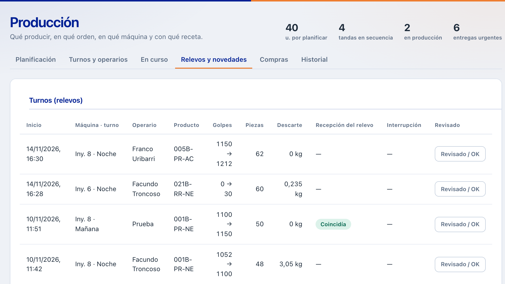
123
1
Revisado / OKUn toque por turno; queda quién y cuándo.
2
Recepción del relevoSi el que recibe la máquina encontró el material que figuraba.
3
Piezas y descarteLo que entró a stock en ese turno.
6
NEXA · Cambios en el sistema
02 · Pantalla del operario
02
Pantalla del operario
Una sola acción principal por vez. El operario no tiene que saber dónde tocar: la pantalla le muestra lo que sigue.
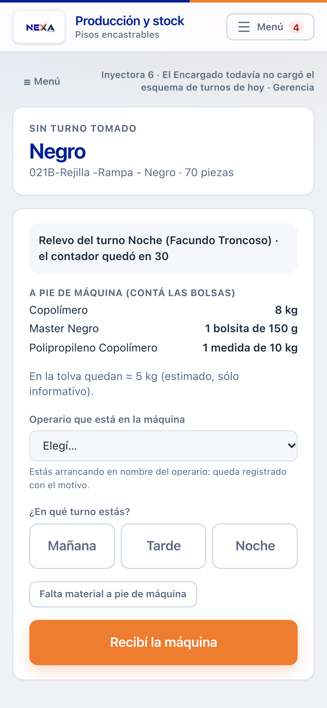
→
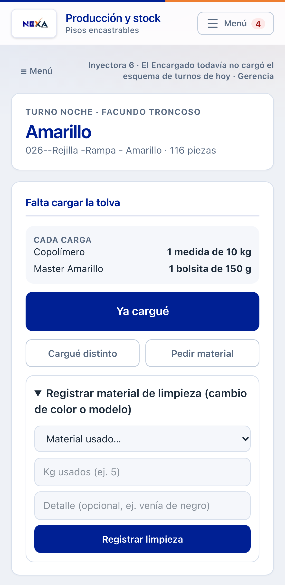
→
1 · Relevo
Cuenta las bolsas a pie de máquina, elige su turno y toca «Recibí la máquina». Si falta algo, lo informa.
2 · Falta cargar
La carga en bolsas y medidas. «Ya cargué», o «Cargué distinto» / «Pedir material». Abajo, la limpieza del inyector.
3 · Produciendo
Hasta qué número del contador producir, la última carga y qué hay a pie de máquina. Pausar, cerrar el turno o terminar.
7
NEXA · Cambios en el sistema
02 · Pantalla del operario
Limpieza del inyector nuevo
Cuando la producción cambia de color o de modelo respecto de la anterior en la máquina, en «Falta cargar la tolva» aparece «Registrar material de limpieza».
El operario indica el material, los kg y un detalle opcional («venía de negro»). Ese material sale del pie de máquina y queda como novedad «Limpieza del inyector» en Relevos y novedades, así se sabe cuánto material se va en cada cambio.
Sólo aparece cuando hay cambio de producto y material a pie de máquina: en una producción que sigue con el mismo color, la pantalla no suma opciones.
Bolsas, kg y material
Bolsas que coinciden con los kg
Se combinan hasta dos presentaciones para mostrar la carga real:
0,675 kg =375 g + 300 g
35 kg =25 kg + 10 kg
El material llega sólo por un retiro
El operario ya no descuenta del stock general. Si a pie de máquina no alcanza para una carga, aparece «Pedir material»: avisa en Producción y en Materia prima hasta que se hace el retiro.
Descarte en piezas
El operario cuenta piezas, no kg. El sistema calcula los kg con el peso por pieza y muestra el resultado antes de confirmar.
Pausas
Las interrupciones se registran con «Pausar» durante el turno, con su motivo y hora.
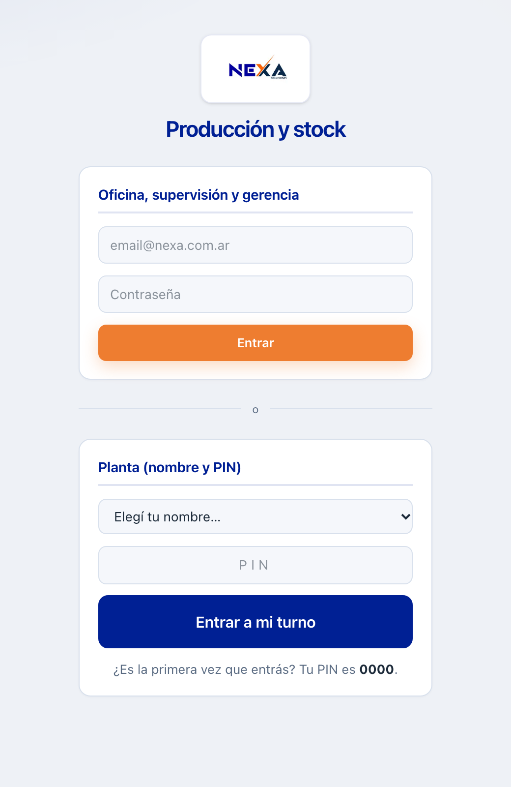
Ingreso a la planta
Cada operario de inyectoras tiene su usuario y entra con su nombre y PIN.
Los que no tenían PIN quedaron con el PIN inicial, y la pantalla lo avisa:
¿Es la primera vez que entrás? Tu PIN es0000
El Encargado puede entrar con contraseña (oficina) o con PIN (planta).
8
NEXA · Cambios en el sistema
03 · Cajas, etiquetas y stock
03
Cajas, etiquetas y stock
Al cerrar cada turno, las cajas completas entran a stock y se imprime una etiqueta por caja con el código nuevo, más corto.
Cómo se lee el código de cada caja
005B
Producto3 números + inicial del proveedor del master
–
6000004
Partida NEXAÚltimo dígito del año (6 = 2026) + número de partida
–
00025
CantidadPiezas de la caja, en 5 dígitos
Antes: 001B-RU-NE-6000172-00022 · Ahora sin nombre ni color: el código de producto ya los identifica.
Taller → Etiquetas de cajas
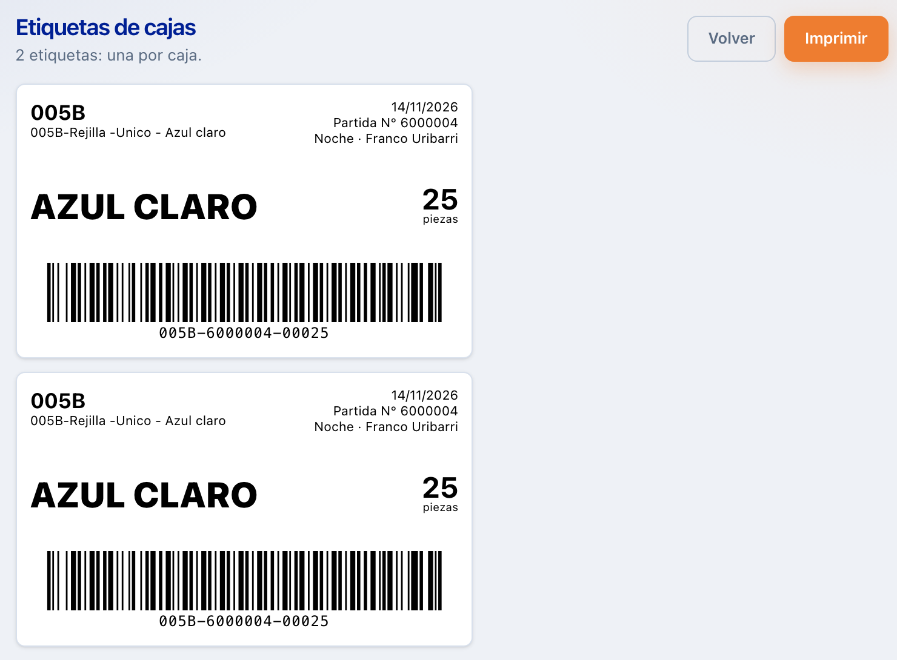
Etiquetas del cierre de un turno: una por caja, con código, fecha, partida, color en grande, cantidad y código de barras.
Entran a stock las cajas completas del turno (piezas buenas ÷ piezas por caja). Al terminar la producción entra la última, con su cantidad real.
El stock sale del cierre, no de las etiquetas impresas. Una etiqueta rota la reimprime sólo el Encargado, con motivo: mismo código y no suma una caja.
La partida es la misma en producción, etiqueta y trazabilidad: se genera al arrancar.
En el despacho, el sistema lee el código y suma las piezas. Si el producto no es del pedido, o se leen más cajas de una partida que las que hay, la lectura queda con alerta y no suma.
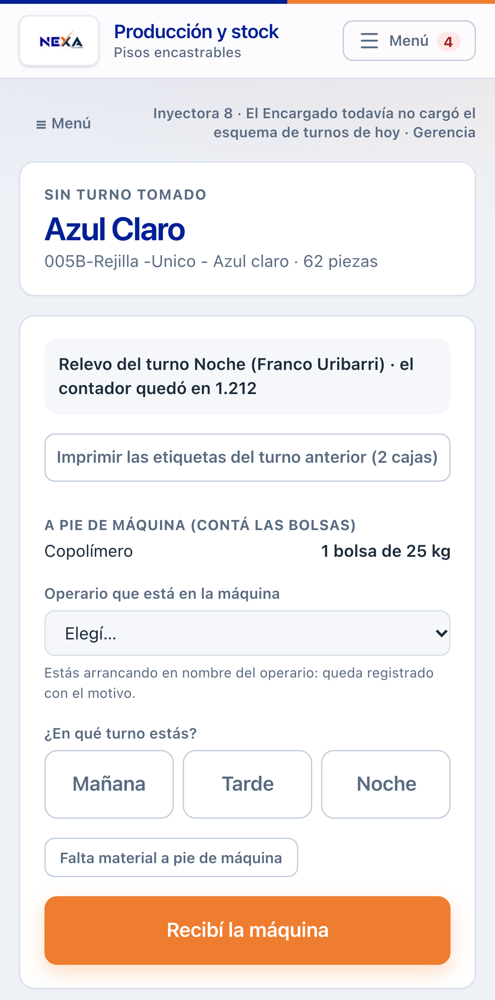
Al recibir la máquina, el operario puede imprimir las etiquetas del turno anterior.
9
NEXA · Cambios en el sistema
04 · Pedidos
04
Pedidos
Los cargan Ventas, Supervisión y Gerencia. El Encargado los ve para planificar.
Pisos en baldosas o en m² nuevo
Pedidos → Nuevo pedido
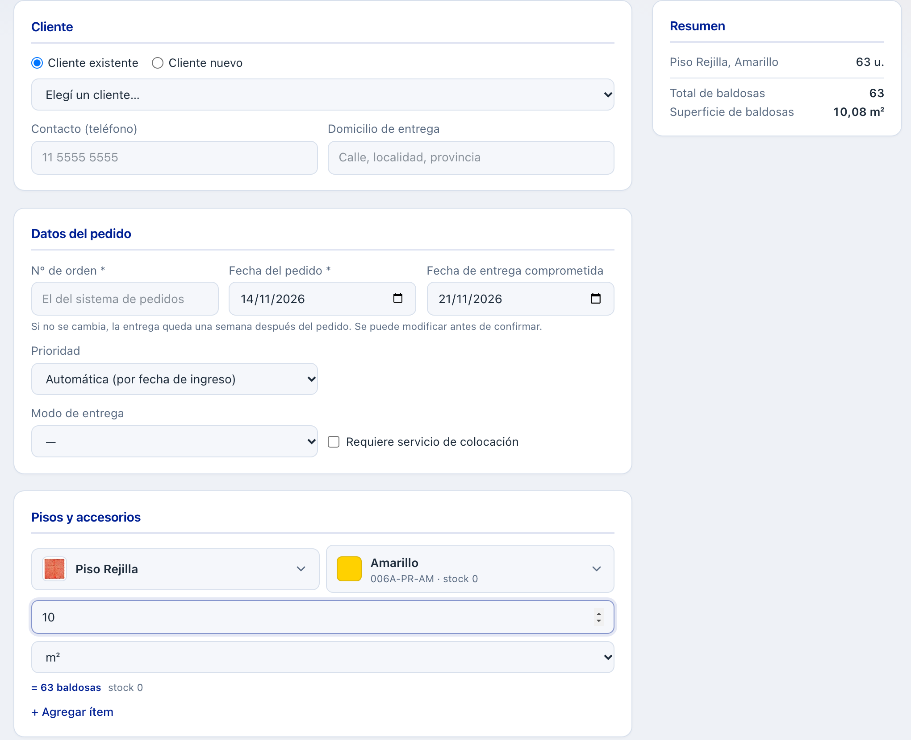
1234
1
N° de orden manualLo carga Ventas, es obligatorio y el sistema avisa si se repite.
2
UnidadCada piso se carga en baldosas o en m².
3
Conversión a la vistaDebajo se ve cuántas baldosas son.
4
ResumenTotal de baldosas y superficie del pedido.
Cómo convierte
10 m² ÷ 0,16 m² = 62,5 → 63 baldosas
Se redondea hacia arriba. Usa los m² de cada producto; si no los tiene, 0,16 m² por baldosa (6,25 por m²).
10
NEXA · Cambios en el sistema
04 · Pedidos
Modificar los productos de un pedido
Pedidos → Editar pedido
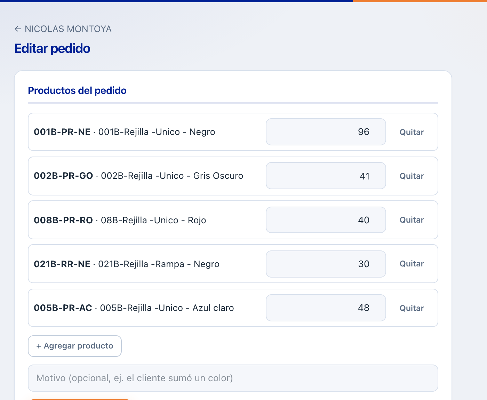
Se agregan colores, se cambian cantidades o se quitan productos mientras el pedido no salió («Listo para despachar» inclusive).
Si ya se despachó, lo nuevo entra como otro pedido.
El sistema ajusta solo las reservas de stock y las tandas planificadas.
Aviso a Administración
Para revisarlo antes del despacho.
Aviso al Encargado
Por si tiene que corregir la planificación.
Pedido listo en parte
Cuando sólo una parte del pedido está armada, el estado dice «Listo para despachar (parcial)»: el despacho de lo armado está listo y se ve que faltan productos.
Pedidos
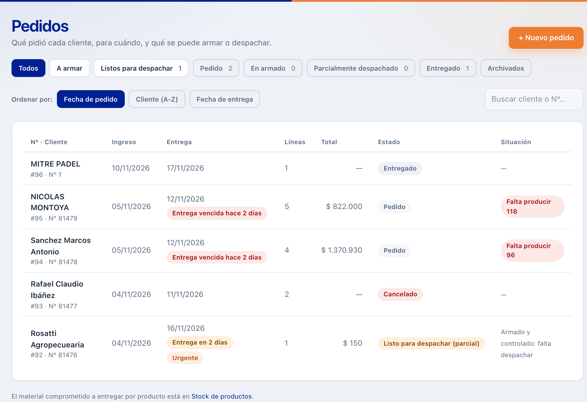
1
El #92 figura «Listo para despachar (parcial)»: armado y controlado, con productos que faltan.
11
NEXA · Cambios en el sistema
05 · Materia prima y compras
05
Materia prima y compras
Pedido a Compras
Cada material del stock general tiene «Pedir a Compras». Materia prima indica los kg y una aclaración.
A Compras le llega el aviso, y el pedido figura «pedido por Materia prima» hasta que lo activa.
Después de cada ingreso se vacían el código de barras y la cantidad, para no cargar dos veces la misma bolsa.
Materia prima → Stock general
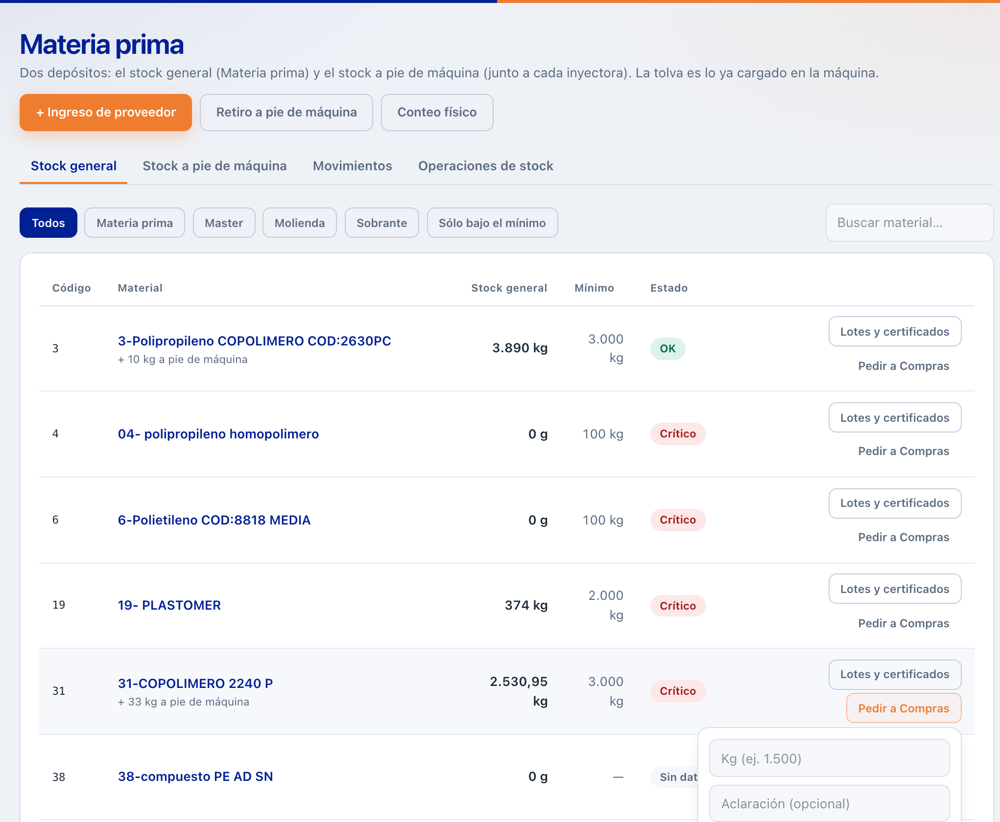
1
Tres necesidades de compra, separadas
1 · Para pedidos
Se compra sí o sí.
2 · Stock mínimo de pisos
Para reponer los pisos bajo el mínimo.
3 · Stock mínimo de MP
Se consulta antes con contabilidad.
Compras → Necesidad de materia prima
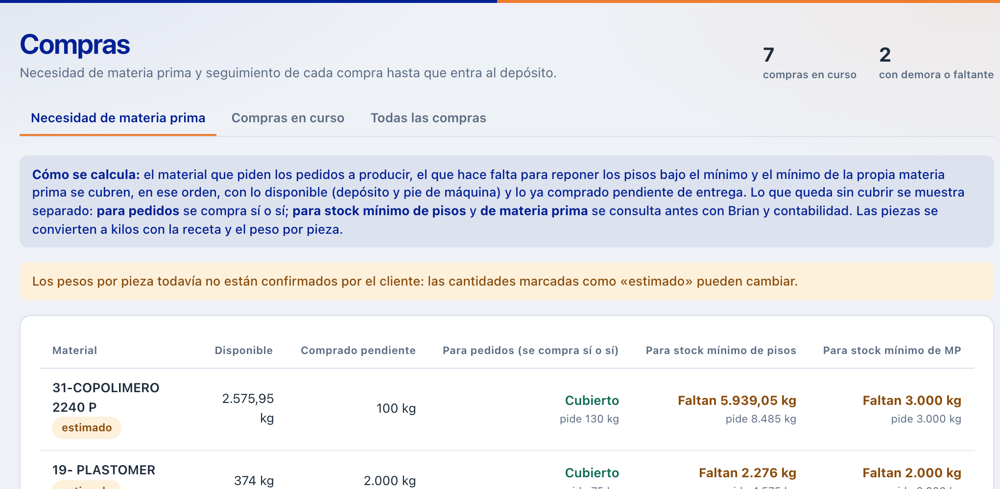
123
12
NEXA · Cambios en el sistema
05 · Materia prima y compras
Conteo físico semanal nuevo
La planilla que Materia prima llevaba en Excel, dentro del sistema: Materia prima → «Conteo físico».
Materia prima → Conteo físico
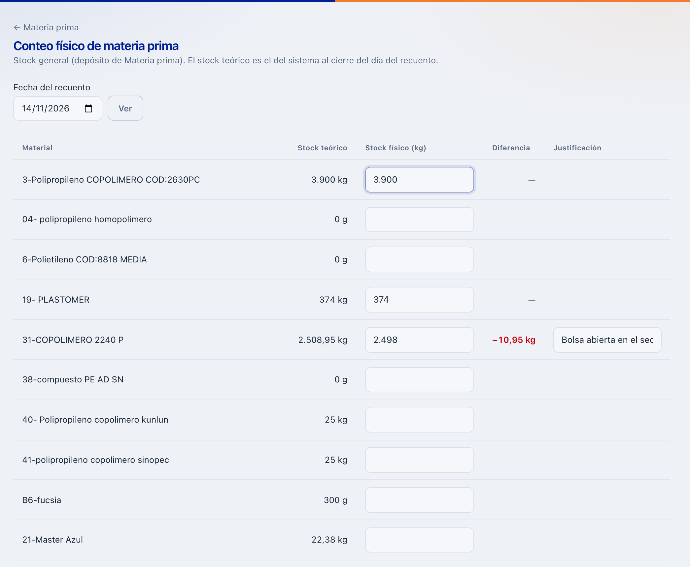
12345
1
Fecha del recuentoPuede ser de un día anterior.
2
Stock teóricoLo que dice el sistema a esa fecha, según los movimientos.
3
Stock físicoLo que se contó. En blanco, no se cuenta.
4
DiferenciaLa calcula el sistema.
5
JustificaciónObligatoria si hay diferencia.
+
Ajustar el stockOpcional: el sistema queda igual a lo contado, con un movimiento por diferencia.
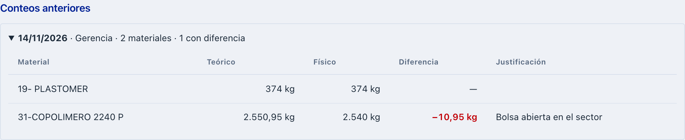
Cada conteo queda guardado con fecha, responsable y su comparativo.
13
NEXA · Cambios en el sistema
06 · Usuarios, perfiles y avisos
06
Usuarios, perfiles y avisos
Operarios
Usuario propio para cada operario de inyectoras, con PIN (inicial 0000).
Taller → Matrices
Mantenimiento y cambios de matriz. No produce con las inyectoras.
Encargado
No carga pedidos: los ve para planificar. Entra con contraseña o con PIN.
Quién recibe cada aviso
Administración
Encargado
Compras
Matrices
Pedido modificado
Pedido de Materia prima
Cambio de matriz programado, movido o cancelado
Tienen pantalla de Avisos: Gerencia, Supervisión, Administración, Encargado, Compras y Matrices. Qué sección ve cada perfil queda para definir: la matriz está en la página 17.
14
NEXA · Cambios en el sistema
07 · Preguntas pendientes
07
Preguntas pendientes
Mientras no se respondan, el sistema funciona como dice «Hoy».
Recetas, etiquetas y pesos
1
Las etiquetas reales van por la partida 00172. ¿El sistema sigue desde ese número? ¿Lleva 6 dígitos después del año (6000172) o 5 (600172)?
HoyNumera desde 1 en el año, con 6 dígitos después del año.
2
Piezas por caja de cada producto. La planilla de cálculo por m² dice 8 en rejilla y 25 en ciego; la etiqueta de ejemplo, 22 baldosas.
HoyTodas las baldosas usan 25 por caja. Define cuántas etiquetas se imprimen.
3
Accesorios: ¿van en cajas? Si van, ¿cuántas piezas por caja de cada uno?
HoyEntran como un solo bulto al terminar la producción, con una etiqueta.
4
Masters: cuál es el azul claro y cuál el oscuro (21B y A4 3351), cuál el verde claro y cuál el oscuro (B6 113227 y A6 4170), y el de Violeta Obispo.
HoyEsos 5 colores no tienen receta nueva.
5
Confirmar: el Gris Oscuro usa el master B1 (antes B10) y el ciego trama negro, Copolímero 2240 P (antes 2630 PC).
HoySe cargó como dice el Excel.
CorrectoCorregir: ______________
6
Refuerzo de master en el arranque (0,375 kg en rejilla, 0,75 kg en ciego): ¿es sólo para el negro?
HoySe aplica sólo al negro.
Sólo negroTodos los colores
7
Rampa ciego: la tabla dice 10 kg de 2240 P + 25 kg de Plastomer. ¿Es así o son 10 kg de cada uno?
HoySe cargó como figura en la tabla.
CorrectoCorregir: ______________
8
Peso real por pieza de cada producto.
HoyPesos estimados: los kg de descarte, la tolva estimada y la necesidad de compra son orientativos.
15
NEXA · Cambios en el sistema
07 · Preguntas pendientes
Etiquetas
9
Impresora de etiquetas: qué modelo y en qué equipo de la planta (PC o tablet fija).
HoySe imprime desde el navegador a la impresora que tenga el equipo.
Materia prima y conteo físico
10
Conteo físico: ¿se cuenta también lo que está a pie de máquina?
HoySólo el stock general. El pie de máquina se concilia al cerrar cada retiro.
Sólo stock generalTambién pie de máquina
11
Conteo físico: ¿el ajuste del stock lo hace quien cuenta, o primero lo revisa alguien?
HoyUna casilla al guardar el conteo, sin tildar por defecto.
Quien cuentaLo revisa: ______________
12
¿Quién hace el conteo físico?
HoyMateria prima, Encargado, Supervisión y Gerencia.
13
Retiro RM-00015 (producción #18): quedan a pie de máquina 25 kg del 31 y 10 kg del 3. ¿Se devuelven al depósito o se usaron?
HoySigue abierto con ese material a pie de máquina.
DevolverSe usó: ______________
14
Ingreso de materia prima: el resto de ese pedido quedó en pausa. ¿Qué se necesita?
HoySe vacían el código y la cantidad después de cada ingreso.
Usuarios
15
PIN del Encargado (David) para entrar desde la planta.
HoyEntra sólo con contraseña. El PIN se carga en Administración → Usuarios.
Cargarle PINSólo contraseña
16
NEXA · Cambios en el sistema
07 · Preguntas pendientes
Qué ve cada perfil
Se pidió que cada uno vea sólo lo suyo. Ya se aplicó que el Encargado no carga pedidos y que Taller queda para mantenimiento y cambios de matriz. Para el resto: tachen lo que sobra y marquen lo que falta.
lo ve hoy no lo ve
17
NEXA · Cambios en el sistema
08 · Lo que sigue
08
Lo que sigue
Tres mejoras para seguir la planta en tiempo real.
Cada máquina, ahora
Arriba del calendario, una franja con lo que hace cada inyectora en este momento: «Sin tarea» en rojo y aviso cuando una pausa pasa de 1 hora.
Ficha de la producción
Los pasos en el orden real en que ocurrieron y el operario del turno actual.
Entregas en riesgo
Marca de «Entrega en riesgo» cuando la fecha programada de la tanda cae después de la entrega comprometida del pedido.
Gracias.
Las respuestas de la sección 7 permiten cerrar recetas, etiquetas y conteo. Con eso, el sistema queda listo para la operación diaria.